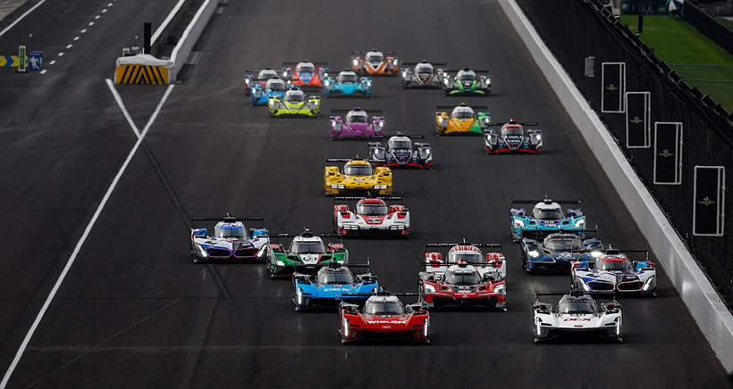
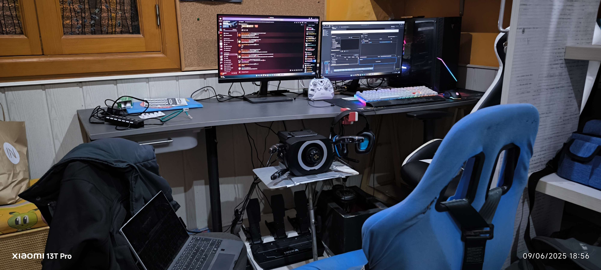
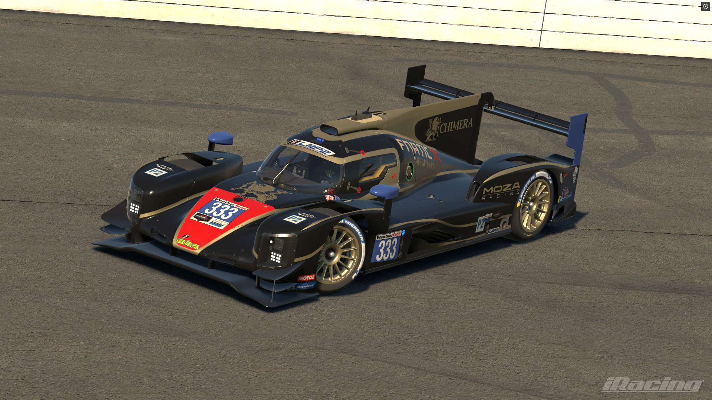
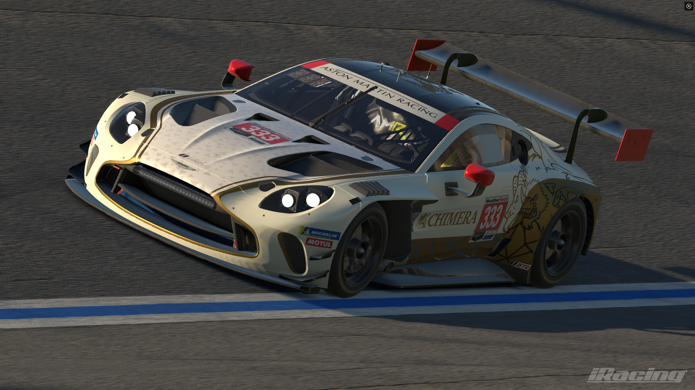
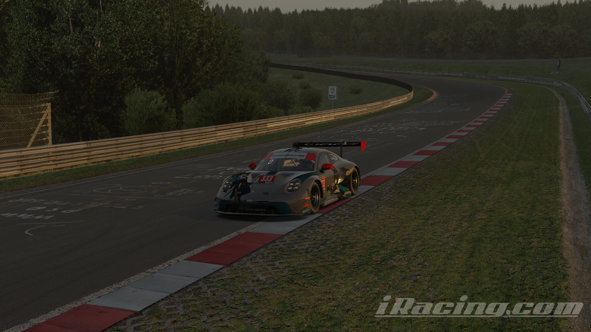

Sobre mi:
Som en Marc Mas, tenc 18 anys, i visc a Maria de la Salut, vaig completar la ESO, un cicle de grau mitjà de Sistemes Microinformàtics i Xarxes a l'IES Sineu, i ara estic cursant un grau superior de Desenvolupament d'Aplicacions Multiplataforma, ja que volia fer un grau superior i aquest em va pareixer el més interessant dels 3 que hi ha a la familia. M'encanten l'informàtica i els cotxes desde que era petit.
Habilitats:
- Nivell B2 d'anglès
- Nivell mitjà de HTML i CSS, juntament amb PHP.
- Coneixements de nivell mitjà de Java
- Nocions bàsiques de ASP.NET (C#)
- Coneixements molt bàsics de Penetration Testing
- Puc ajudar a resoldre problemes generals d'informàtica (Windows no arranca, aquest teclat no funciona...)
Hobbies o aficions:
Som un gran aficionat a tot el tema del motor, ja sigui de Formula 1 o MotoGP fins a competicions menys
conegudes a Espanya com poden ser les categories de resistència (WEC/IMSA) amb cotxes com GT3s o GTPs.

També m'agraden tot tipus de videojocs, ja siguin shooters com Counter-Strike 2 o Rainbow 6, i també em puc
considerar un pilot virtual, ja sigui a jocs com iRacing, Le Mans Ultimate o Assetto Corsa EVO, ja que tenc
un simulador a casa on he fet carreres de resistència de fins a 24 hores en equip.

També m'agrada fer captures de pantalla a cotxes als jocs als quals juc, fins hi tot hi tenc un repositori de Github dedicat a ell, aquí hi ha uns exemples
|  |  |  |

|